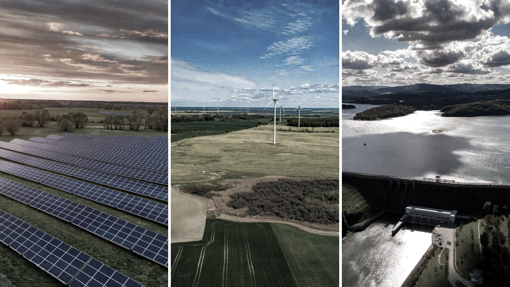

OZE

Odnawialne źródła energii (OZE) - są to takie źródła energii, których wykorzystanie nie powoduje długotrwałego ich niedoboru, ponieważ są stosunkowo szybko odnawiane. Odnawialne źródła energii to przede wszystkim energia słoneczna, energia wiatru i wody, energia geotermalna oraz energia pozyskiwana z biomasy.
Pytanie 1 Wybierz swój przedział wiekiowy:
Poniżej 12
13-18
19-25
Powyżej 26
Pytanie 2 Czy kiedykolwiek się spotkałeś/łaś z pojęciem OZE?
Tak
Nie
Pytanie 3 Czy korzystasz z jakiejkolwiek energii odnawialnej?
Tak
Nie
Pytanie 4 Czy w miejscu zamieszkania lub okolicy występuje lub jest planowana budowa?
Biogazownia
Elektrownia wodna
Elektrownia jądrowa
Elektrownia wiatrowa
Elektrownia słoneczna
Pytanie 5 Jak daleko od domu znajduje się lub będzie budowana? Jeśli nie, zaznacz brak.
Poniżej 1km
1-4km
5-8km
Powyżej 9km
Brak
Pytanie 6 Jakie jest według ciebie najlepsze dla środowiska źródło energii?
Biogazownia
Elektrownia wodna
Elektrownia jądrowa
Elektrownia wiatrowa
Elektrownia słoneczna
Pytanie 7 Czy jesteś za budową elektrowni jądrowej w Polsce?
Tak
Nie
Nie wiem
Po wypełnieniu ankiety, kliknij na górze strony przycisk "Wyślij Formularz".